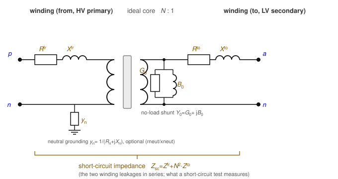
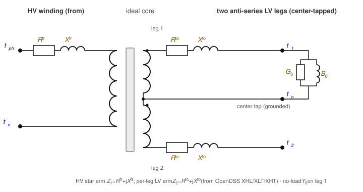
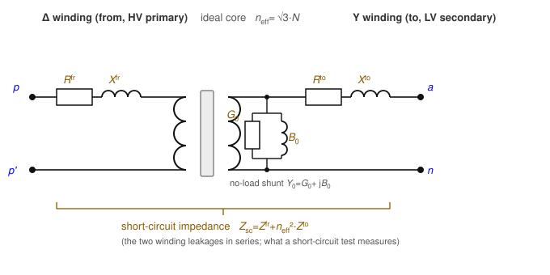
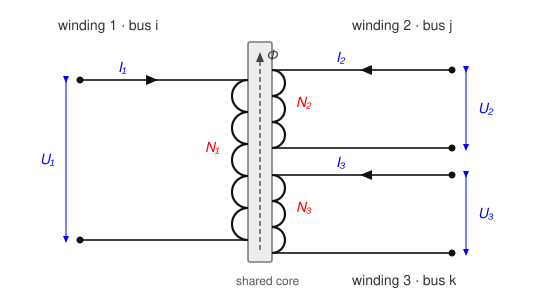
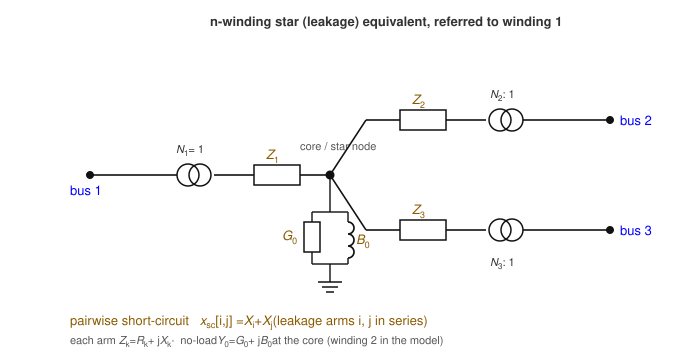

Transformers
A transformer couples two buses through galvanically isolated windings, which share no conductor, only magnetic flux. (Step-voltage regulators, where the windings do share a node, are a separate element; see Regulators.) Each winding configuration is a distinct data-model object: single_phase, center_tap, wye_delta, delta_wye, and the BMOPFTools-specific n_winding. Symbols are defined in Notation.
The foundational model is in the Transformers page of the BMOPF specification. This page records where BMOPFTools extends it and how BMOPFTools implements it; part 6 covers the implementation.
In the literature and in tools, a winding (and an n-winding transformer) usually counts the number of buses / voltage levels the transformer connects — its ports — not the number of physical coils. For a single-phase transformer the two coincide: a two-winding single-phase unit has two coils and two ports. For a three-phase transformer they do not: a three-phase two-winding transformer has six physical coils (three per side) yet is still called "two-winding". Throughout this page "winding" means a port — one bus connection at one voltage level — and each winding comprises n_phase physical coils. The n_winding object's windings array lists these ports (each with its own bus), so n is the number of buses, and per phase there are n coils on the shared core.
BMOPFTools extensions to the specification
The specification builds every transformer from an idealized winding pair plus a series leakage impedance only. BMOPFTools adds:
- a no-load (magnetizing) shunt and internal neutral grounding, which with the series leakage form the three loss components;
- a tap, fixed or free (a continuous OPF variable);
- per-winding leakage on both windings of
wye_delta/delta_wye, where the specification lumps a singler_series/x_serieson the wye winding; - the general
n_windingsubtype.
Extension fields
| Field | Type | Unit | Description |
|---|---|---|---|
r_series_from, x_series_from, r_series_to, x_series_to | number | Ω | Per-winding series leakage, accepted for wye_delta/delta_wye as well. The specification's lumped r_series/x_series is migrated onto the wye winding (r/x_series_from for wye_delta, r/x_series_to for delta_wye) with the delta winding set to zero; supplying both forms for the same component is an error. |
g_no_load, b_no_load | number | S | Legacy excitation on winding 2: bank total for single-phase/Yd/Dy, per coil for n-winding, entire first secondary half-winding for center-tap |
no_load_shunt | object | S | Explicit {winding, g, b}, per coil of the selected winding; exclusive with the legacy fields |
r_neutral_from/_to, x_neutral_from/_to | number | Ω | Winding-neutral grounding impedance (OpenDSS rneut/xneut) |
tap, tap_min, tap_max | number | – | From-side tap multiplier; a free OPF variable when tap_min < tap_max |
The n_winding object carries a windings array (each with bus, terminal_map, v_nom, configuration, r_winding, optional delta_roll, i_max, s_max) and pairwise short-circuit reactances x_sc keyed "i_j".
r_winding is an ohmic resistance at the winding's own coil voltage; x_sc is in ohms referred to winding 1's coil voltage. A wye coil voltage is line-to-neutral and a delta coil voltage is line-to-line. The engine consumes these ohmic values directly, without using per-winding s_rating to rebase them. That rating is retained metadata; explicit s_max/i_max fields declare supported winding limits.
from_dss reconstructs multi-winding resistance from the source IR's %R, coil voltage, phase count, and winding-1 power base. PowerIO alone uses each winding's own rating, which disagrees with the independent OpenDSS primitive for the unequal-rating fixture. The package records changed values and source bases in _meta.powerio_intake_repairs. Smaller, equal, and larger winding-rating cases are regression-tested; ordinary BMOPF JSON resistances remain physical ohms and are not rebased.
Extension symbols
This page writes $\textcolor{red}{U^{\text{ref}}_i},\ \textcolor{red}{U^{\text{ref}}_j}$ for the specification's $U^{\text{nom}}$ (the v_nom_from/v_nom_to fields), with turns ratio $\textcolor{red}{N}=\textcolor{red}{U^{\text{ref}}_i}/\textcolor{red}{U^{\text{ref}}_j}$.
| Field | Symbol | Notes |
|---|---|---|
g/b_no_load | $\textcolor{brown}{Y_0}=\textcolor{red}{G_0}+\textcolor{brown}{j}\textcolor{red}{B_0}$ | magnetizing shunt |
r/x_neutral_* | $\textcolor{brown}{y_n}=1/(\textcolor{red}{R_n}+\textcolor{brown}{j}\textcolor{red}{X_n})$ | neutral grounding |
tap | $\textcolor{red}{\tau}$ (fixed) or $\tau$ (variable) | $\textcolor{red}{N}_{\text{eff}}=\textcolor{red}{N}\,\tau$ |
When the tap is free, the ratio $\textcolor{red}{N}_{\text{eff}}$ becomes a decision variable. The winding currents $\textcolor{blue}{I_{x,\sigma,k}}$ and winding voltages $\textcolor{blue}{V^{\sigma}_{x,k}}$ are as in the specification's Variables section.
4. Equality constraints
The specification's equations hold in BMOPFTools with the turns ratio $\textcolor{red}{N}$ replaced by the tap-adjusted $\textcolor{red}{N}_{\text{eff}}$. The subsections below record the loss components the specification does not model and how each subtype places them.
The idealized winding pair
See The idealised winding pair in the specification. With the tap, the ampere-turn balance reads $\textcolor{red}{N}_{\text{eff}}\,\textcolor{blue}{I_{x,\text{fr}}} + \textcolor{blue}{I_{x,\text{to}}} = 0$ and, with all losses removed, $\textcolor{blue}{V^{\text{fr}}_x} = \textcolor{red}{N}_{\text{eff}}\,\textcolor{blue}{V^{\text{to}}_x}$.
Loss components
Three loss elements dress the ideal pair. Every subtype places them the same way, consistent with the OpenDSS reference model; the subtype diagrams below are the same family of picture, differing only in how the windings connect.
- Series leakage. As in the specification's Series leakage section, with the combined HV-referred leakage $\textcolor{brown}{Z_x}=\textcolor{brown}{Z^{\text{fr}}_x}+\textcolor{red}{N}_{\text{eff}}^2\,\textcolor{brown}{Z^{\text{to}}_x}$ giving $\textcolor{blue}{V^{\text{fr}}_x} - \textcolor{red}{N}_{\text{eff}}\,\textcolor{blue}{V^{\text{to}}_x} = \textcolor{brown}{Z_x}\,\textcolor{blue}{I_{x,\text{fr}}}$.
- No-load (magnetizing) shunt. A single $\textcolor{brown}{Y_0}=\textcolor{red}{G_0}+\textcolor{brown}{j}\textcolor{red}{B_0}$ sits across winding 2 (the to-side coil), referred to that coil's voltage, adding a current $\textcolor{brown}{Y_0}\,\textcolor{blue}{V^{\text{to}}_x}$ to the to-side terminal. This is the core-loss/excitation branch (OpenDSS places it on winding 2, verified against its
Yprim). - Neutral grounding. When a wye winding's shared neutral terminal is earthed through an impedance, an internal branch $\textcolor{brown}{y_n}=1/(\textcolor{red}{R_n}+\textcolor{brown}{j}\textcolor{red}{X_n})$ draws $\textcolor{brown}{y_n}\,\textcolor{blue}{U_{b,n}}$ from that neutral terminal to earth.
The loss equivalent circuit
Read on the standard per-winding-pair equivalent circuit — shown here for the archetypal two-winding (single-phase) transformer, the reference picture every subtype below specializes:

- Winding series impedance — each coil carries a series leakage, $\textcolor{brown}{Z^{\text{fr}}_x}=\textcolor{red}{R^{\text{fr}}_x}+\textcolor{brown}{j}\textcolor{red}{X^{\text{fr}}_x}$ (from) and $\textcolor{brown}{Z^{\text{to}}_x}$ (to). This is the copper/leakage loss.
- Short-circuit impedance — a short-circuit test shorts one side and energizes the other, so it measures the series sum of the two leakages referred to one side, $\textcolor{brown}{Z_{\text{sc}}}=\textcolor{brown}{Z^{\text{fr}}_x}+\textcolor{red}{N}_{\text{eff}}^{2}\textcolor{brown}{Z^{\text{to}}_x}$. It is not a separate element, and the split between the two windings is a modeling choice, since the test fixes only the sum (see the note below).
- No-load loss and magnetization — the shunt $\textcolor{brown}{Y_0}=\textcolor{red}{G_0}+\textcolor{brown}{j}\textcolor{red}{B_0}$ on the winding-2 coil carries the core (no-load) loss $\textcolor{red}{G_0}$ and the magnetizing susceptance $\textcolor{red}{B_0}$, as an open-circuit test measures.
The optional neutral-grounding branch $\textcolor{brown}{y_n}=1/(\textcolor{red}{R_n}+\textcolor{brown}{j}\textcolor{red}{X_n})$ (shown on the from-side neutral) is the third loss element: an internal branch from a wye winding's neutral terminal to earth. These map one-to-one onto the data fields: r/x_series_from → $\textcolor{brown}{Z^{\text{fr}}_x}$, r/x_series_to → $\textcolor{brown}{Z^{\text{to}}_x}$, g_no_load → $\textcolor{red}{G_0}$, b_no_load → $\textcolor{red}{B_0}$, r/x_neutral_from/_to → $\textcolor{brown}{y_n}$. The subtype diagrams below omit the $\textcolor{brown}{y_n}$ branch to keep the connection clear; it attaches to whichever winding carries a groundable neutral (single_phase, center_tap, wye_delta/delta_wye).
A standard short-circuit test yields only $\textcolor{brown}{Z_{\text{sc}}}$ — the sum of the two winding leakages. Splitting it into $\textcolor{brown}{Z^{\text{fr}}_x}$ and $\textcolor{brown}{Z^{\text{to}}_x}$ requires an extra convention (OpenDSS splits per its winding definitions; a common default is to put it all on one winding, i.e. the Γ-model with the other winding's leakage zero). The data model exposes both fields so the convention is explicit rather than assumed.
The subtypes below re-arrange exactly these three elements: single-phase is the picture above; center-tap replaces the single secondary arm with two LV-leg arms; wye–delta / delta–wye wrap the pair in a Δ/Y connection with a $\sqrt{3}$ referral; and n-winding generalizes the two leakage arms to a star.
Single-phase (wye–wye)
The specification's Single-phase equations apply with $\textcolor{red}{N}_{\text{eff}}$ in place of $\textcolor{red}{N}$; its loss equivalent circuit is the canonical one in The loss equivalent circuit above. The to-side terminal current is $\textcolor{blue}{I_{x,\text{to},k}}+\textcolor{brown}{Y_0}\textcolor{blue}{V^{\text{to}}_{x,k}}$ (series plus magnetizing); the neutral grounding branch, if present, adds its current at the shared neutral.
Center-tap (split-phase)
BMOPFTools uses the specification's coupled-coil center-tap model, with $\textcolor{brown}{Z^{\text{fr}}_x}$ on the HV winding and $\textcolor{brown}{Z^{\text{to}}_x}$ on each LV leg, and adds:
- the tap-adjusted ratio $\textcolor{red}{N}_{\text{eff}}$;
- the magnetizing shunt $\textcolor{brown}{Y_0}$ across winding 2, which is LV leg 1 (between the first to terminal and the center tap);
- internal neutral grounding:
r/x_neutral_fromgrounds the HV neutral andr/x_neutral_togrounds the center tap, each through $\textcolor{brown}{y_n}$.
The second leg's dot is at the center tap, so its leakage drop enters with the opposite sign to the first leg's; giving both legs the same sign makes them identical and loses the load-imbalance physics. As a genuine three-winding unit, the leakage is a star of arms (an HV arm and one per LV leg, not a single series pair), with the no-load shunt on leg 1:

Wye–delta and delta–wye
BMOPFTools keeps a series leakage on both windings ($\textcolor{brown}{Z_{\text{wye}}}$ and $\textcolor{brown}{Z_{\text{del}}}$, from r/x_series_from and r/x_series_to by side), where the specification's Wye–delta and delta–wye model has a lossless delta winding. With the specification's effective ratio $\textcolor{red}{n^{\text{eff}}}$ (evaluated with $\textcolor{red}{N}_{\text{eff}}$) and, for phase $k$, cyclic partner $k'$ (next for Yd, previous for Dy), the drop on the wye phase current runs through an effective impedance $\textcolor{brown}{Z_{\text{eff}}}$:
\[\textcolor{blue}{U_{\text{del},k}} - \textcolor{blue}{U_{\text{del},k'}} = \textcolor{red}{n^{\text{eff}}}\big(\textcolor{blue}{U_{\text{wye},k}} - \textcolor{blue}{U_{\text{wye},n}}\big) - \textcolor{brown}{Z_{\text{eff}}}\,\textcolor{blue}{I_{x,\text{wye},k}}, \qquad \textcolor{brown}{Z_{\text{eff}}}=\textcolor{red}{n^{\text{eff}}}\,\textcolor{brown}{Z_{\text{wye}}}+\frac{n_\phi}{\textcolor{red}{n^{\text{eff}}}}\,\textcolor{brown}{Z_{\text{del}}}\]
at nominal tap, with $n_\phi$ the number of phases (the factor $n_\phi$ converts the delta impedance from the delta bus's line-to-neutral base to its line-to-line coil base). Off-nominal taps scale the tapped-side referral exactly; see Realization. The current transform and wye star-point balance are as in the specification. The magnetizing shunt sits across the winding-2 coils (a delta of branches when the delta is winding 2, phase-to-neutral when the wye is winding 2); the wye neutral may be grounded through $\textcolor{brown}{y_n}$, and a neutral impedance on the delta side is rejected.
The same three loss elements (The loss equivalent circuit) here wrap a delta primary and a wye secondary, with the $\sqrt{3}$ folded into the effective ratio $\textcolor{red}{n^{\text{eff}}}$:

General n-winding
The n_winding object models an arbitrary number of windings (each wye or delta) on a shared core, from the OpenDSS-style short-circuit reactance matrix $\textcolor{brown}{\mathbf{Z}_B}$ referred to winding 1. With per-winding turns ratio $\textcolor{red}{N_k}=\textcolor{red}{U^{\text{ref}}_k}/\textcolor{red}{U^{\text{ref}}_1}$ ($\textcolor{red}{N_1}=1$), referred coil currents $\textcolor{blue}{I^{\text{r}}_k}=\textcolor{red}{N_k}\textcolor{blue}{I_k}$ and referred coil voltages $\textcolor{blue}{V^{\text{r}}_k}=\textcolor{blue}{U_k}/\textcolor{red}{N_k}$, per phase/leg:

\[\sum_{k=1}^{n}\textcolor{red}{N_k}\,\textcolor{blue}{I_k} = 0, \qquad \textcolor{blue}{V^{\text{r}}_1} - \textcolor{blue}{V^{\text{r}}_{i+1}} = \sum_{j=1}^{n-1}\textcolor{brown}{Z_{B,ij}}\,\textcolor{blue}{I^{\text{r}}_{j+1}},\quad i=1,\ldots,n-1.\]
The coil voltage $\textcolor{blue}{U_k}$ is phase-to-neutral for a wye winding and line-to-line for a delta winding (whose v_nom is the line-to-line coil voltage, so the $\sqrt{3}$ lives in $\textcolor{red}{N_k}$). Each wye coil returns its phase currents through its neutral; each delta coil injects between its two phase nodes. The magnetizing shunt again sits across winding 2's coil. Taps are not supported for n_winding: tap fields are rejected and the ratios are fixed at nominal.
This is the general form of the loss model: the leakage is a star of per-winding arms (referred to winding 1) meeting at a common core node, with the no-load shunt across winding 2's coil. It generalizes the two-winding picture — where the two arms in series are the single short-circuit impedance — to $n$ windings, where each unordered pair $(i,j)$ has its own short-circuit reactance $\textcolor{brown}{x_{\text{sc}}}[i,j]$ (the field x_sc keyed "i_j"), and the star arms are recovered from that matrix ($\textcolor{brown}{x_{\text{sc}}}[i,j]=\textcolor{red}{X_i}+\textcolor{red}{X_j}$ for a symmetric star):

So for more than two windings there is no single "short-circuit reactance" — only a matrix of pairwise short-circuits, which is exactly what the x_sc field records.
5. Inequality constraints
The two-winding subtypes use the specification's current circles and nameplate bound. The nameplate s_rating cap is enforced in the power flow as well as the OPF. For n_winding, s_rating is not enforced; instead each winding's optional scalar i_max caps every phase-leg current magnitude, and its optional s_max caps each coil's apparent power at s_max / n_phase.
6. Implementation in BMOPFTools
Realization
Each subtype's device behavior also has an exact nodal primitive admittance $\textcolor{brown}{\mathbf{Y}_x}$ (Yprim); the closed-form matrices — the natural artifact for cross-checking against OpenDSS or another implementation — are collected on the Transformer primitive admittance page, and the OPF stamps the same relations.
All transformer constraints are linear/bilinear in the voltage and current variables, stamped in rectangular form (transformer.jl, dispatched by _add_transformer_constraints!; nwinding.jl for n_winding):
single_phase(_add_yy_transformer!) — Γ-model. To keep the tap degree-2, the leakage is referred to the to side, $\textcolor{brown}{Z'}=\textcolor{brown}{Z^{\text{to}}_x}+\textcolor{brown}{Z^{\text{fr}}_x}/\textcolor{red}{N}_0^2$, and the drop written via $\textcolor{blue}{I_{x,\text{to}}}$ using the ampere-turn coupling — algebraically identical to the HV-referred $\textcolor{brown}{Z_x}$ above at nominal tap, matching the OpenDSS turns-scaledYprim.center_tap(_add_center_tap_transformer!) — for a fixed ratio, the exact 5×5 coupled-coil primitive admittance (Yprim) is stamped, reproducing OpenDSS to machine precision; for a free tap (or a zero star arm) a degree-2 T-model (the leakage star of the center-tap loss figure) is used, which is algebraically identical at nominal.wye_delta/delta_wye(_add_yd_transformer!) — the $\textcolor{red}{n^{\text{eff}}}$ referral with the exact tap² short-circuit scaling; the effective-impedance coefficients are kept degree-1 in $\{\textcolor{red}{n^{\text{eff}}},1/\textcolor{red}{n^{\text{eff}}}\}$.n_winding(_add_nwinding_constraints!) — independent builder using the $\textcolor{brown}{\mathbf{Z}_B}$ leakage and ampere-turn relations, connection-aware coil incidence.- Neutral grounding (
r/x_neutral_*) and the no-load shunt (g/b_no_load) are stamped as extra KCL currents at the relevant terminals in every builder. An explicitno_load_shuntrecord is converted at parse time into a winding-connectedshunt; its source values are kept in_meta["explicit_transformer_core_shunts"]. - Continuous tap promotes $\textcolor{red}{N}_{\text{eff}}$ (or $\textcolor{red}{n^{\text{eff}}}$) to a variable; an auxiliary $1/\textcolor{red}{n^{\text{eff}}}$ pinned by $\textcolor{red}{n^{\text{eff}}}\cdot(1/\textcolor{red}{n^{\text{eff}}})=1$ keeps the delta referral degree-2.
Source map
| Subtype | Code location |
|---|---|
| Dispatch | transformer.jl:_add_transformer_constraints! |
| single_phase (Γ) | _add_yy_transformer! |
| center_tap (Yprim / T-model) | _add_center_tap_transformer! |
| wyedelta / deltawye | _add_yd_transformer! |
| n_winding (ZB leakage) | nwinding.jl:_add_nwinding_constraints! |
Reconciliation notes
Under a non-nominal tap the short-circuit impedance referred to the tapped side scales as tap², matching OpenDSS; see Transformer models.
The general n_winding transformer, the no-load magnetizing shunt (g/b_no_load, no_load_shunt), internal neutral grounding (r/x_neutral_*), taps, and split Yd/Dy leakage are BMOPFTools extensions; the specification lists the shunt, neutral grounding, and tap-changing as not yet modeled.
single_phase and center_tap share the single_phase_or_center_tap_transformer schema, which exposes r/x_neutral_from/_to. Both builders honor them: an internal $\textcolor{brown}{y_n}=1/(\textcolor{red}{R_n}+\textcolor{brown}{j}\textcolor{red}{X_n})$ grounding branch — *_from grounds the HV neutral, *_to grounds the center-tap neutral. This is accepted for OpenDSS compatibility. The same grounding can be expressed as an explicit external shunt object, which an OPF test verifies gives identical bus voltages; the specification treats neutral grounding as external to the transformer.